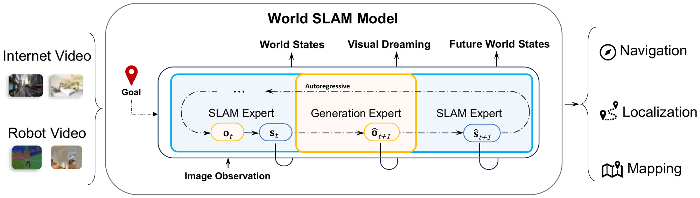

On the InternVLA-N1 start–goal benchmark, WSM uses RGB only and achieves the best SR and SPL in both Home and Commercial scenes among the evaluated methods.
World SLAM Model Joint World Modeling for SLAM and Navigation
TL;DR
WSM brings the SLAM mechanism itself, rather than only its outputs, into navigation: the generation expert dreams goal-conditioned futures, and the SLAM expert estimates world states from both observed and dreamed frames, maintaining one persistent world state from RGB input alone. Incorporating SLAM into the learning process benefits both training and inference, rather than merely providing its outputs to the model at inference time. WSM thereby closes the perception–action loop within a single world model.

A SLAM expert and a generation expert in one autoregressive model, supporting navigation, localization, and mapping.